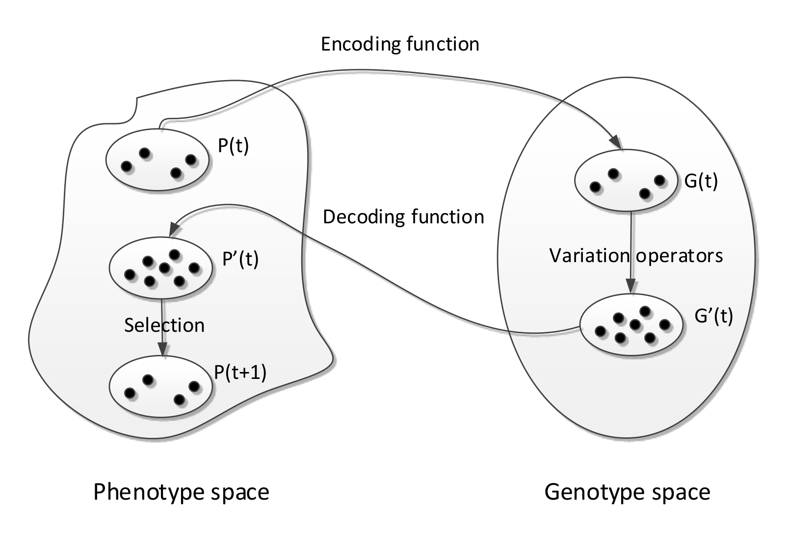
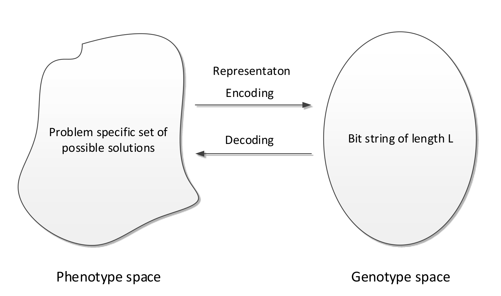
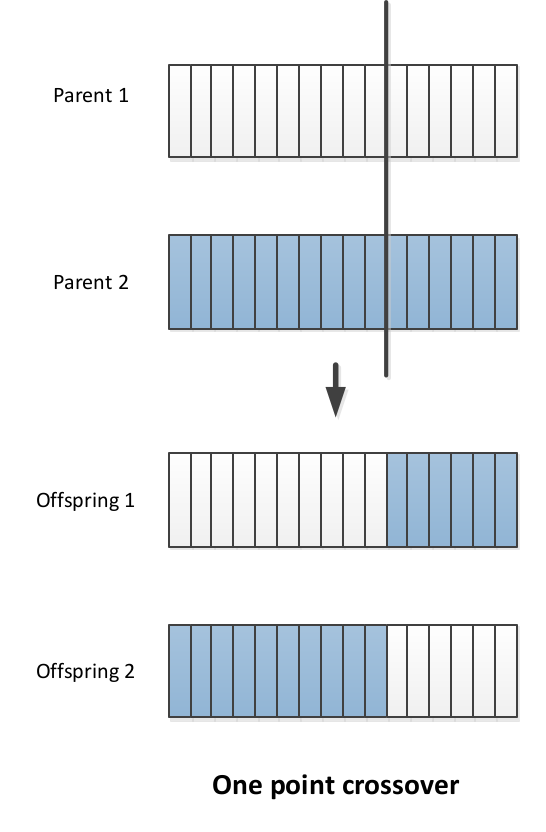
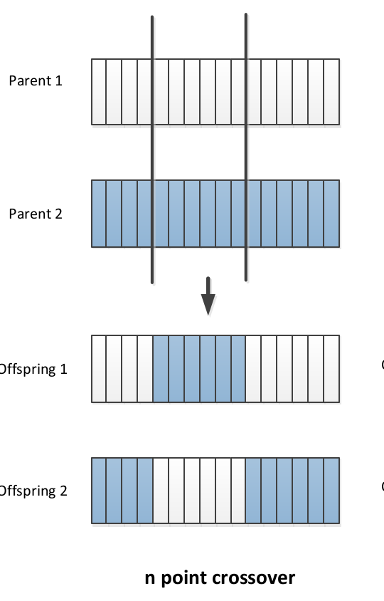

Evolution is the change in inherited characteristics of biological populations over successive generations
Heritable characteristics/ traits
such as the colour of ones eyes
passed from one generation to the next in DNA
Change or genetic variation comes from:
mutations: random changes in the DNA sequence
Crossover: re-shuffling of genes through sexual reproduction and migration between populations.
The driving force of evolution is natural selection - the survival of the fittest
Genetic variation that enhance the survival and reproduction become and remain more common in successive generations of a population.
How do we map the relationship between evolution and optimisation?
Fitness→objective function in optimisation Individualsof a species→solution in optimisation
What are Evolutionary Algorithms?
Evolutionary Algorithms (EAs) are a subset of meta-heuristic algorithms inspired by biological evolution, which include: Genetic Algorithms, Evolutionary Programming, Evolution Strategies and Differential Evolution
They are essentially a kind of stochastic local search optimisation algorithm.
Evolutionary Algorithms∈Meta-Hueristics∈Stochastic Local Search algorithm∈Search and enumeration algorithms
A characteristic of EAs is that they are population based. i.e. they generate, maintain and optimise a population of candidate solutions
X_0 := generate initial population of solutions
terminationFlag := false
t :=0
Evaluate the fitness of each individual in X_0
while(terminationFlag != true) {
Selection:select parents from X_i based on their fitness
Variation: Breed new individuals by applying variation operators to parents
Fitness Calculation: Evaluate the fitness fo new individuals
Reproduction: Generate population X_t++ by replacing least-fit individuals
t ++If a termination criterion is met: terminationFlag := true
}
Building Blocks of Evolutionary Algorithms
An Evolutionary Algorithms is made up of:
A representation each solution is called an individual
A fitness (objective) function: to evaluate solutions
Variation operators: mutation and crossover
Selection and reproduction: survival of the fittest
Optimisation is about finding a global optimum. To do this we must balance exploration against exploitation
In order to use an EA to solve a problem you need each of the building blocks listed above
Representation
This is a way to represent or encode solutions
If we had a optimisation problem where the fitness of a solution is given by f(x), where x is the candidate solution.
Solution x∈X is called a phenotype
We encode the solutions using some form of representation
The representation of a solution is called a genotype
Variation operators act on genotypes
Genotypes are decoded into phenotypes
Phenotypes are evaluated using the fitness function f(x)
Decoding and encoding functions map phenotypes and genotypes
The search space of solutions is the set of genotypes and phenotypes

The selection of our representation depends on the problem.
Some possible representations include but are not limited to:
Binary representation
Real number representation
Random key representation
Permutation representation
Binary Representation
A traditionally very popular representation for use in genetic algorithms
Represent an individual as a bit string of length L : a∈{0,1}L - Genotypes
Map phenotypes to bit string genotypes {0,1}L via an encoding function
Map genotypes to phenotypes by a decoding function

Decoding Function
Using a bit string to represent binary or integer solutions is trivial however, given an optimisation probelm with n continuous variables, how do we represent them using a bit string of length L
Note: Usually each continuous variable will have an interval bound such as : xi∈[ui,vi]
To solve this:
Divide a∈{0,1}L into n segments of equal length
si∈{0,1}nL,i=1,…,n
Decode each segment into an integer Ki,i=1,…,n and,
Ki=j=0∑nLsij⋅2j
Apply decoding function h(Ki) i.e. map the integer linearly into the interval bound xi∈[ui,vi]:
h(Ki)=ui+Ki⋅2nL−1vi−ui
Mutation
To mutate our candidate solutions we flip each bit with a probability of pm, called the mutation rate
A standard mutation rate is pm=L1 but can be in the range pm∈[L1,21]
If we use a low mutation rate, we can see this as creating a small a small random perturbation on the parent genotype. The mutated offspring are largely the same as their parents so will be close together in a search space relative to their Hamming distance.
Together with selection mutation performs a stochastic local search: it exploits the current best solutions by randomly exploring the search space around them.
Crossover
In the crossover process, two parents are selected randomly with a probability pc∈[0,1]
In 1 point crossover: select a single crossover point on two strings, swap the data beyond that point in both strings

In n point crossover:
Select multiple crossover points on two strings,
Split strings into parts using those points
Alternating between the two parts and concatenate

In Uniform crossover:
∀i∈{1,…,L}, toss a coin
If head: copy bit i from parent 1 to offspring 1, parent 2 to offspring 2
If tail: copy bit i from parent 1 to offspring 2 and parent 2 to offspring 1.